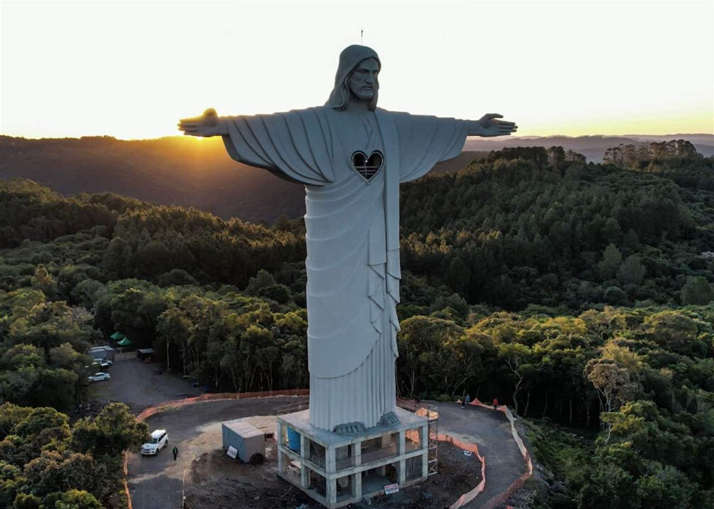

Cristo Redentor
|  |
El Cristo Redentor es una imponente estatua de Jesucristo situada en la cima del monte Corcovado, en Río de Janeiro, Brasil. Inaugurada en 1931, esta monumental obra tiene una altura de 30 metros, a los que se suman los 8 metros de su pedestal, y sus brazos se extienden hasta alcanzar una envergadura de 28 metros. Diseñada por el ingeniero brasileño Heitor da Silva Costa y esculpida por el artista francés Paul Landowski, la estatua es un símbolo emblemático de Brasil y del cristianismo en el mundo. Construida con hormigón armado y revestida con pequeñas piedras de jabón, la figura se alza como un punto de observación que ofrece vistas panorámicas espectaculares de la ciudad y sus alrededores. El Cristo Redentor es no solo una maravilla arquitectónica, sino también un punto de encuentro cultural y espiritual, atrayendo a turistas y peregrinos de todas partes del globo. Ha sido designado como una de las Nuevas Siete Maravillas del Mundo y es un ícono de la hospitalidad y la calidez del pueblo brasileño. |
| Pais |
Brasil |
| Region |
Rio de Janeiro |
| Fundacion |
1931 |
| Inscripcion |
2007 |
| Region |
America Latina y Caribe |
| Lugar de Celebracion |
Cerro del Corcovado |